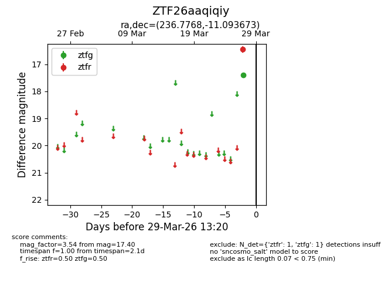
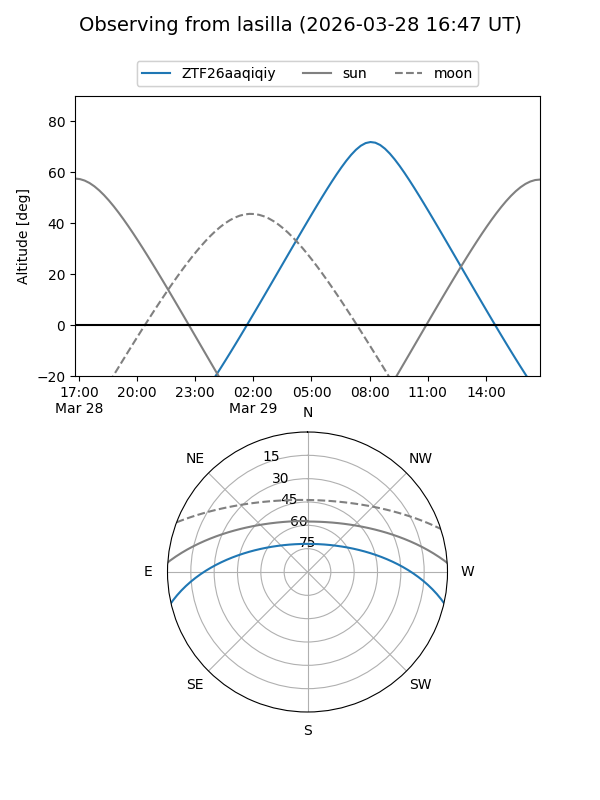
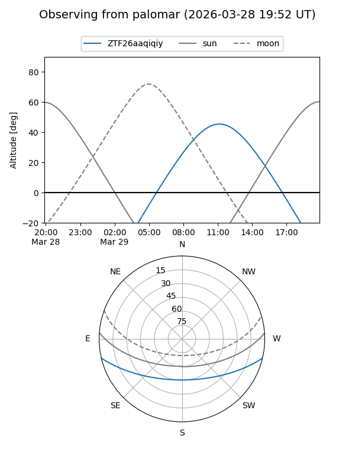

ZTF26aaqiqiy
Target ZTF26aaqiqiy at 2026-03-29 13:24
Aliases and brokers:
FINK: link
Lasair: link
ALeRCE: link
alt names
ZTF26aaqiqiy (ztf,fink_ztf)
Coordinates:
equatorial (ra, dec) = 236.7768,-11.09367
equatorial (HMS+DMS) = 15:47:06.43,-11:05:37.22
galactic (l, b) = (356.9846,+32.77752)
Flags:
Photometry:
last ztfg=17.40, ztfr=16.45
1 ztfg, 1 ztfr detections
Lightcurve

Visibility


Additional plots